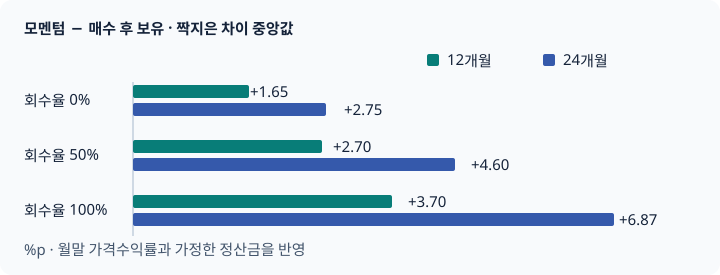

한·미 주식 팩터의 12·24개월 성과와 상장폐지 민감도
초록. 과거 종목군으로 팩터를 계산하고 12·24개월 뒤의 성과를 같은 달에 시작한 매수 후 보유와 비교하였다. 한국에서는 상장폐지 정산 가정을 달리하며 가격 모멘텀을 평가하고, 미국에서는 당시 공개된 재무와 종목 시세를 연결하여 네 전략을 비교하였다. 한국 모멘텀은 세 정산 시나리오에서 24개월 보유를 앞섰다. 미국 고정 표본에서는 모멘텀과 저발생액이 24개월 짝지은 비교에서 앞섰고 가치는 뒤졌다. 표본 선정, 배당의 유무, 정산 정보의 범위는 시장별로 달라 결과를 각 표본 안에서 해석하였다.
1. 서론
매수 후 보유보다 높은 수익을 얻으려면 종목 선택의 효과가 회전 비용을 넘어서야 한다. 가치·수익성·발생액·모멘텀은 서로 다른 정보를 사용한다. 장부가치와 시가총액의 비율은 가격 수준을, 매출총이익과 자산의 비율은 생산 자산의 수익성을 나타낸다. 이익과 영업현금흐름의 차이는 이익 가운데 아직 현금으로 뒷받침되지 않은 부분을 가늠하는 데 쓰인다. 모멘텀은 최근 수익률을 한 달 이상 건너뛴 과거 가격 움직임으로 종목의 순위를 매긴다.
이 연구는 12개월과 24개월의 동일한 진입월을 짝지어 종목 선별 성과를 비교한다. 한국에서는 당시 거래 종목을 복원해 상장폐지 정산 가정에 따른 결과 변화를 살핀다. 미국에서는 당시 공개된 연차 재무를 종목별 신호에 연결하고, 시장 전체에 더 가까운 공개 포트폴리오를 별도 비교에 사용한다. 시장 간 차이는 각 표본이 제공하는 증거의 범위 안에서 해석한다.
2. 관련 연구
Fama와 French(1993)는 규모와 시가총액 대비 장부가치에 따라 구성한 요인을 사용해 주식 수익률을 설명했다. 후속 연구는 수익성과 투자 요인을 추가했다(Fama & French, 2015). Novy-Marx(2013)는 매출총이익을 자산으로 나눈 지표에 주목했다. 이 연구의 종목별 수익성 점수는 이 정의에 근거한다. 공개 미국 포트폴리오의 영업수익성은 비용과 자기자본을 이용하는 별도 정의이므로 두 집계의 성과를 각각 제시한다.
Sloan(1996)은 발생액과 현금흐름이 이후 이익에서 같은 정도로 지속되는지 조사했다. 이 연구는 회계이익과 영업활동현금흐름의 차이를 자산으로 나눈 낮은 발생액 점수를 사용한다. 공개 포트폴리오에서도 낮은 발생액 그룹을 비교하지만, 그 자료의 발생액은 영업운전자본 변화를 바탕으로 계산한다. Jegadeesh와 Titman(1993)은 과거 수익률 순위에 근거한 승자·패자 포트폴리오를 검증하였다. 이 연구는 공매도를 사용하지 않는 계좌에서 과거 상위 종목을 선택하고, 같은 시기에 시작한 매수 후 보유와 비교한다. 팩터 자체의 선행 수익률로 요인 노출의 방향을 바꾸는 별도 검증은 Ehsani와 Linnainmaa(2022)의 문제의식을 따른다.
3. 데이터와 방법
3.1 한국 종목군과 상장폐지
한국 종목군은 2020년 이후의 KRX 일별 시세 공개 미러와 상장폐지 이력에서 복원하였다. 평가는 2021년 11월 진입부터 2026년 10월 만기까지 진행하였다. 시장 월말 당일 가격과 양의 거래량을 관측했고 필요한 과거 수익률을 모두 관측한 종목을 그 달의 후보로 삼았다. 판단월을 포함한 가장 최근 두 월 수익률을 제외하고, 그 직전 11개월 가격수익을 복리로 합산하였다.
매수 후 보유는 진입월 후보 전체에 동일 비중으로 투자한다. 동일비중 재조정은 같은 후보 정의로 각 진입월부터 세 달마다 포트폴리오를 다시 구성한다. 모멘텀은 같은 재조정 주기에 점수 상위 30%만 선택한다. 주문은 월말 종가에서 편도 10bp를 적용해 모의하였다. 당일 거래량은 사후에 확인하며 해당 종가의 주문 가능 수량을 검증하지는 않는다. 매매가 멈춘 보유 종목은 마지막 평가액을 이월하였다. 폐지월에는 폐지월 직전까지 장부에 남은 월말 평가액의 0%·50%·100%를 현금으로 바꾸는 세 시나리오를 계산하였다. 관측된 최종 상환액은 없으며, 이 시나리오는 민감도 분석이다. 배당은 집계에서 빠져 있다.
3.2 미국 종목군과 재무 공시
진입 전 공개된 SPY 보유 내역에서 종목군을 정하고, 전체 평가 구간과 준비 기간의 조정 종가가 모두 있는 종목을 남겼다. SEC의 제출 판본별 공개일과 식별자를 종목에 연결했다. 신호 기준월 시작 전에 공개된 재무만 조회하고, 직전 월말에 관측한 시세를 사용해 다음 월말 주문을 모의하였다. 가치는 양의 장부자기자본을 추정 시가총액(같은 연차 보고서의 발행주식 수에 분할을 맞춘 신호월 종가를 곱한 값)으로, 수익성은 매출총이익을 총자산으로 나눈다. 낮은 발생액 점수는 영업활동현금흐름에서 순이익을 뺀 뒤 총자산으로 나눈다. 모멘텀은 한국과 같은 11개월 가격 관측 구간의 배당·분할 조정 종가 수익률을 사용한다.
매월 네 점수가 모두 계산되는 공통 종목군을 정하였다. 매수 후 보유는 진입 시점의 공통 후보를 같은 비중으로 담았고, 분기 동일비중은 진입월 기준 세 달마다 당시 공통 후보 전체를 담았다. 각 팩터는 공통 후보 상위 30%를 동일 비중으로 매수하고 같은 일정으로 교체했다. 수익률과 거래비용은 달러 기준이며, 거래비용은 편도 10bp다.
3.3 미국 공개 요인 자료
Kenneth French Data Library의 시가총액 가중 월별 분위 수익률을 사용하였다. 가치·영업수익성·모멘텀은 상위 세 분위, 발생액은 하위 세 분위의 수익률을 동일 가중으로 합산하였다. 시장 비교는 공개 시장 위험 프리미엄에 무위험 이자율을 더한 달러 수익률을 사용하였다. 2021년 12월부터 2026년 9월까지 공통 관측이 있는 58개월만 사용하였다. 12·24개월 평가창에서 순서대로 진입월을 한 달씩 옮긴 뒤, 각 기한에서 겹치지 않는 창으로 나누어 시작월에 따른 변화도 조사하였다. 공개 계열 비교에는 주문, 거래비용, 환전비용이 들어가지 않는다.
별도 분석에서는 2000년 1월~2021년 11월에 미국 주식 모멘텀 요인의 3요인·5요인 선형 노출을 추정하고, 계수를 고정한 채 이후 58개월의 실현 요인값으로 설명오차를 비교했다. 이는 요인 노출 설명 검증이다. 같은 자료에서 직전 한 달을 건너뛴 12개 월 수익률 합의 부호로 네 스타일 요인의 롱·쇼트 노출을 바꾸는 변형도 평가하였다.
3.4 평가
각 진입월에서 전략 수익률과 대조군 수익률을 먼저 뺀 뒤 차이의 중앙값과 양수였던 진입월 수를 계산하였다. 표의 순수익률·최대낙폭은 각각 전략별 중앙값이다. 한국과 미국 종목별 실험은 월말 평가액을 사용하므로 월중 낙폭은 측정하지 않는다. 목표 달성 건수는 만기 평가액이 초기 자산보다 15% 이상 높은 계좌를 센다.
4. 실험 결과
4.1 한국 모멘텀과 폐지 정산 가정
월별 후보는 2,128~2,464종목이었다. 평가 기간의 폐지 후보는 286건이다. 표 1은 폐지월 직전까지 장부에 남은 평가액의 50%를 회수한다고 가정했을 때의 결과를 보여준다.
| 기간 | 전략 | 순수익률 | 월별 최대낙폭 | +15% 달성 | 보유 대비 차이 |
|---|---|---|---|---|---|
| 12개월 | 매수 후 보유 | +0.11% | −15.01% | 7/48 | 기준 |
| 12개월 | 분기 동일비중 | +0.59% | −14.41% | 7/48 | +0.18%p |
| 12개월 | 모멘텀 | +2.36% | −16.04% | 10/48 | +2.70%p |
| 24개월 | 매수 후 보유 | −1.82% | −18.34% | 5/36 | 기준 |
| 24개월 | 분기 동일비중 | −3.41% | −18.30% | 4/36 | −0.92%p |
| 24개월 | 모멘텀 | +3.18% | −17.04% | 7/36 | +4.60%p |
모멘텀은 24개월 평가창 36개 중 34개에서 보유를 앞섰다. 같은 재조정 주기의 분기 동일비중보다도 짝지은 수익률 차이가 +5.34%p였다. 폐지 회수율을 0%와 100%로 바꿨을 때 24개월 보유 대비 차이는 각각 +2.75%p와 +6.87%p였다. 0% 회수 가정에서는 보유보다 앞섰지만 모멘텀 자체의 24개월 수익률 중앙값은 +0.34%에 그쳤다. 12개월에서는 2021년 진입 두 계좌가 모두 보유에 뒤졌고, 50% 회수 가정의 전체 12개월 최대낙폭도 세 전략 중 모멘텀이 가장 컸다.

4.2 미국 종목별 팩터와 매수 후 보유
2021년 6월 말 SPY 보유 공시는 8월 27일 공개되었다. 보유 내역 506행에서 준비 기간과 평가 기간의 가격이 이어지는 종목 419개를 남겼다. 이 종목들에 대해 연차 공시 판본 2,898건과 해당 판본에서 확인한 발행주식 수 1,770건을 확보하였다. 네 점수를 모두 계산할 수 있는 종목은 월별 130~139개였고, 그 종목만 월별 비교에 사용하였다.
| 전략 | 12개월 순수익률 | 12개월 보유 대비 | 24개월 순수익률 | 24개월 최대낙폭 | 24개월 보유 대비 | 보유를 앞선 24개월 창 |
|---|---|---|---|---|---|---|
| 매수 후 보유 | +13.72% | 기준 | +31.62% | −11.94% | 기준 | — |
| 분기 동일비중 | +12.47% | −0.67%p | +27.91% | −12.08% | −2.75%p | 4/36 |
| 가치 | +4.61% | −5.94%p | +12.66% | −13.16% | −17.16%p | 0/36 |
| 수익성 | +9.99% | −2.74%p | +21.24% | −11.87% | −6.46%p | 6/36 |
| 저발생액 | +13.01% | +0.47%p | +30.04% | −15.20% | +0.85%p | 21/36 |
| 모멘텀 | +11.03% | −0.04%p | +34.47% | −12.42% | +1.65%p | 23/36 |
12개월 평가창은 48개, 24개월은 36개였다. 모멘텀은 24개월 수익률 중앙값에서 가장 높았지만, 12개월에는 보유와 거의 같았다. 24개월 목표 달성은 모멘텀이 32개, 보유가 33개로 수익률 중앙값 순서와 달랐다. 저발생액은 24개월 짝지은 차이에서 앞섰으나 최대낙폭 중앙값은 대조군보다 컸다. 가치 전략은 이번 미국 표본의 모든 24개월 진입월에서 보유에 뒤졌다.
공시에서 신호로 이어진 사례는 애플이다. 2022년 10월 29일부터 사용할 수 있었던 10-K의 매출총이익과 총자산을 11월 신호에 넣자 수익성 점수는 0.48414였다. 이 공시를 근거로 애플이 12월 수익성 포트폴리오의 상위 30%에 들어갔다. 애플 SEC 원공시
4.3 미국 공개 자료의 비교
24개월 평가창에서 비용 전 미국 시장 수익률의 중앙값은 +43.31%였다. 저발생액의 전략별 중앙값은 +47.88%로 가장 높고 월별 최대낙폭 중앙값은 −6.49%였다. 모멘텀은 35개 평가창 중 25개에서 시장을 앞서 네 전략 중 승수가 가장 높았다. 24개월 창을 겹치지 않게 구성하고 시작월을 24가지로 옮기자 우위의 방향이 달라졌다. 모멘텀은 18개 시작월 배열에서 차이 중앙값이 양수였고, 전체 차이 범위는 −4.06%p~+7.73%p였다. 동일 시계열에서 시작월만 바꾼 비교이므로 각 배열은 서로 독립적인 검정 표본으로 셀 수 없다.
팩터의 부호를 조정한 전략은 같은 네 요인에 비중을 고정한 전략보다 24개월 수익률이 짝지은 기준에서 +3.62%p 높았으나, 미국 주식시장 대비 차이는 −31.17%p였다. 실현 요인을 사용한 모멘텀 설명의 검증 구간 월평균 제곱근오차는 3요인 4.63%, 5요인 4.86%였다. 이 설정에서는 두 요인을 추가해도 검증 구간 오차가 줄지 않았다.
공개 요인 확장에서는 저베타 롱쇼트(BAB), 우량주 롱쇼트(QMJ), 전통 가치 및 대안 가치(HML)의 저자 제공 월별 미국 수익률에 같은 무위험수익률을 더해 평가했다. 24개월 수익률 중앙값은 저베타 +8.85%, 우량주 +0.30%였다. 같은 집계의 미국 시장은 +41.66%였다. 대안 가치는 전통 가치 대비 짝지은 차이가 −1.23%p였다. 공매도와 차입을 포함한 실제 계좌 비용은 반영하지 않았다. AQR 공개 데이터와 출처 명세
5. 논의
한국에서 모멘텀은 회수율을 세 가지로 바꿔도 짝지은 24개월 성과가 양수였고, 분기 동일비중보다도 높은 성과를 보였다. 다만 계좌의 배당을 제외했고 거래정지 종목의 가치도 마지막 평가액에 머물렀다. 50% 회수 조건에서 24개월 모멘텀 계좌의 만기 미청산 잔고는 초기 자금의 1.73%가 중앙값이었다. 계좌 만기 순수익률에는 이 평가액이 포함된다. 따라서 만기 목표의 실제 현금 달성 여부를 이 집계로 확인할 수 없다. 시세가 없던 기간에는 낙폭 역시 늦게 반영될 수 있다.
미국 공시 실험은 정보가 공개되기 전의 보고서를 사용하지 않도록 통제한다. 가격이 끝까지 확보된 종목을 골랐기 때문에 상장폐지와 종목코드 변경을 포함한 처음의 전체 종목군 성과를 추정할 수 없다. 미국 공개 분위 및 롱쇼트 요인 계열은 더 넓은 종목군의 맥락을 제공하지만, 거래비용과 환율, 체결 가능성이 다른 비교다. 서로 다른 집계의 수치를 빼서 시장이나 전략의 우위를 매길 수 없다.
12·24개월 평가창이 겹치므로 승수를 독립 검정처럼 해석할 수 없다. 알려진 시점에 공개된 종목 식별자·배당·최종 지급액까지 연결한 뒤, 다른 기간과 비용 조건에서 같은 규칙을 다시 검증해야 한다.
6. 결론
한국 가격 모멘텀은 세 폐지 회수 가정에서 24개월 매수 후 보유를 앞섰다. 미국 공개 계열에서는 저발생액의 만기 수익률 중앙값이 높았고 모멘텀이 미국 시장을 자주 앞섰다. 우위는 대조군과 진입 시점에 따라 달라졌다. 이 결과는 자료 범위별 후속 실험을 지원하며, 상장폐지와 배당을 모두 반영한 한·미 공통 포트폴리오의 성과 추정에는 추가 입력이 필요하다.
재현 자료
시장별 원본 수집법과 재현 명령, 계좌별 결과, 출처 해시를 제공한다. 미국의 전체 주문·신호 원장은 EC2에 보관하였다. 내려받는 압축본은 재현 코드와 공개 가능한 집계·검증 자료로 구성하였다. 재현 절차 · 재현 코드와 결과 내려받기 · FINTOS 도서관
참고문헌
Fama, E. F., & French, K. R. (1993). Common risk factors in the returns on stocks and bonds. Journal of Financial Economics, 33(1), 3–56. DOI
Fama, E. F., & French, K. R. (2015). A five-factor asset pricing model. Journal of Financial Economics, 116(1), 1–22. DOI
Jegadeesh, N., & Titman, S. (1993). Returns to buying winners and selling losers. The Journal of Finance, 48(1), 65–91. DOI
Novy-Marx, R. (2013). The other side of value. Journal of Financial Economics, 108(1), 1–28. DOI
Sloan, R. G. (1996). Do stock prices fully reflect information in accruals and cash flows about future earnings? The Accounting Review, 71(3), 289–315. JSTOR
Ehsani, S., & Linnainmaa, J. T. (2022). Factor momentum and the momentum factor. The Journal of Finance, 77(3), 1877–1919. DOI